Fall 2026
Statement of purpose—proposed research
| Theme | Applicants |
|---|---|
| US–China rivalry / geopolitics | 67% |
| Semiconductors / high-tech | 40% |
| Supply chains | 33% |
| Firm strategy | 33% |
| AI & digital tech | 20% |
| Trump tariffs / trade policy | 20% |
| Taiwan’s international standing | 13% |
| Housing, taxation, inequality | 13% |
| Political risk & markets | 7% |
Can I send it to your recipient?
Teaching Policy Analysis Through Animated Films: A Mickey Mouse Assignment?
students often focus on gathering evidence to the detriment of thinking “because running around collecting data looks and feels productive, whereas first-rate thinking is hard and frustrating.”
Economic approach to public problems \(\Rightarrow\) beyond disciplinary focus
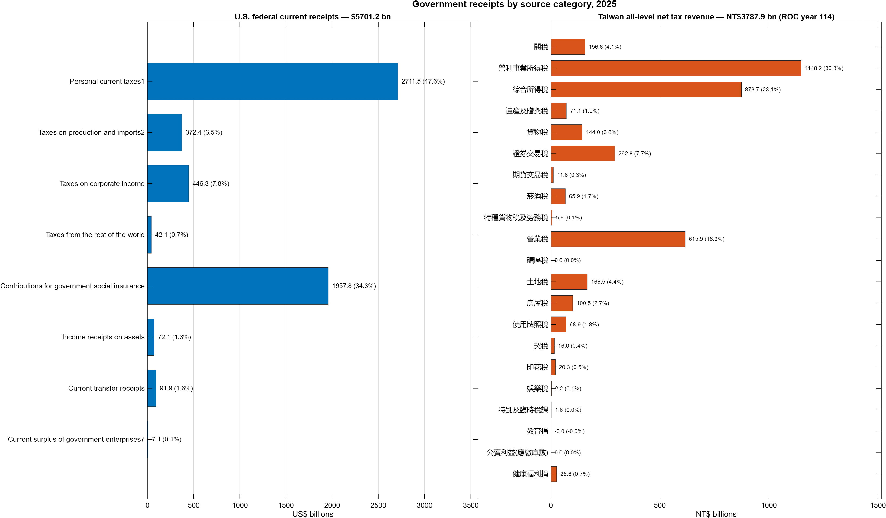
| Line | Source item | US$ bn | Share |
|---|---|---|---|
| 3 | Personal current taxes | 2,711.5 | 47.6% |
| 4 | Taxes on production and imports | 372.4 | 6.5% |
| 8 | Taxes on corporate income | 446.3 | 7.8% |
| 9 | Taxes from the rest of the world | 42.1 | 0.7% |
| 10 | Contributions for government social insurance | 1,957.8 | 34.3% |
| 13 | Income receipts on assets | 72.1 | 1.3% |
| 19 | Current transfer receipts | 91.9 | 1.6% |
| 23 | Current surplus of government enterprises | 7.1 | 0.1% |
| Current receipts | 5,701.2 | 100.0% |
| Source order | 官方稅目 | NT$ bn | Share of net tax revenue |
|---|---|---|---|
| 2 | 營利事業所得稅 | 1,148.2 | 30.3% |
| 3 | 綜合所得稅 | 873.7 | 23.1% |
| 10 | 營業稅 | 615.9 | 16.3% |
| 6 | 證券交易稅 | 292.8 | 7.7% |
| 12 | 土地稅 | 166.5 | 4.4% |
| 1 | 關稅 | 156.6 | 4.1% |
| 5 | 貨物稅 | 144.0 | 3.8% |
| 13 | 房屋稅 | 100.5 | 2.7% |
| 4 | 遺產及贈與稅 | 71.1 | 1.9% |
| 14 | 使用牌照稅 | 68.9 | 1.8% |
| 8 | 菸酒稅 | 65.9 | 1.7% |
| 總計 | 3,787.9 | 100.0% |
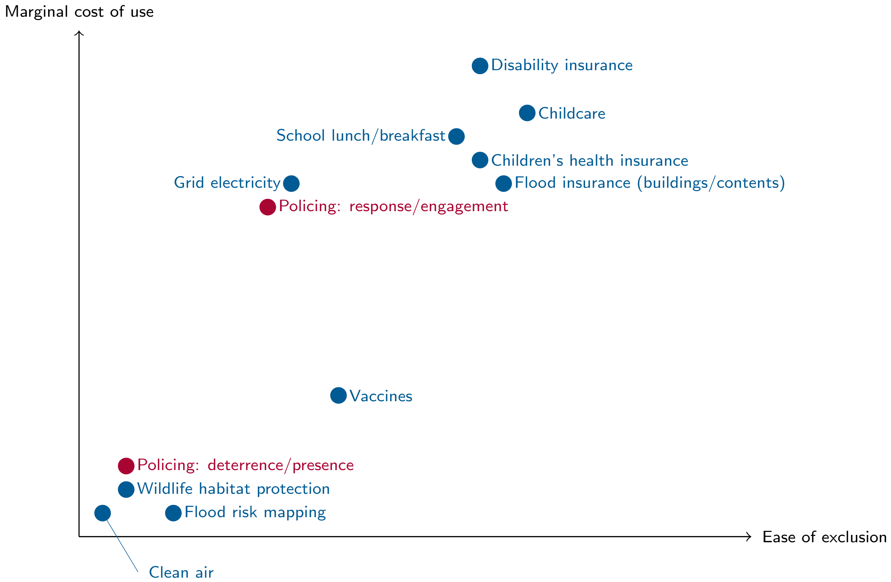
And establish your side of the relationship with your readers
Writer and reader of equal status confront a shared question or problem
You are a research assistant to a state legislator who needs to decide whether to support a new sales tax on soda and candy as a means of raising state revenues and reducing consumption of sugar. Using the economic analysis tools we have learned in class, write a recommendation memo to your boss.
Undecided or puzzled audiences with skeptical tendencies
What kind of bearings should our engineering team use in our design for a circumferentially mounted radiator fan? Write your proposal to the rest of your team. They are uncertain about the best approach but likely to raise objections to your solution.
Resistant or hostile audiences
The design team for the circumferentially mounted radiator fan has recommended air bearings, but you believe that this decision is a mistake. Write a memo to the team’s project manager laying out your best case against air bearings.
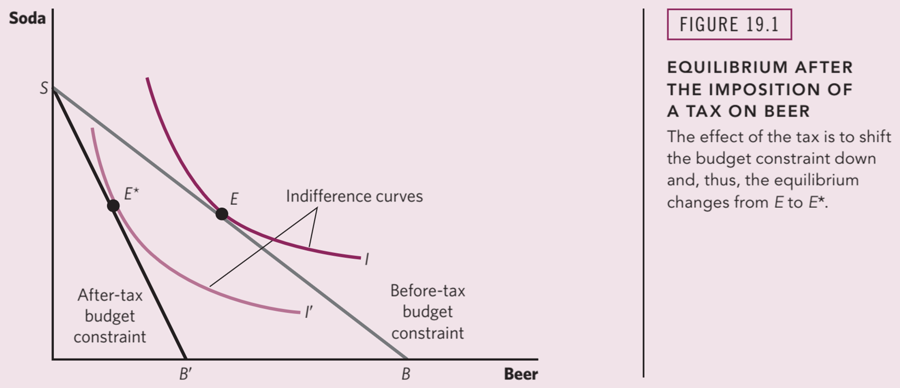
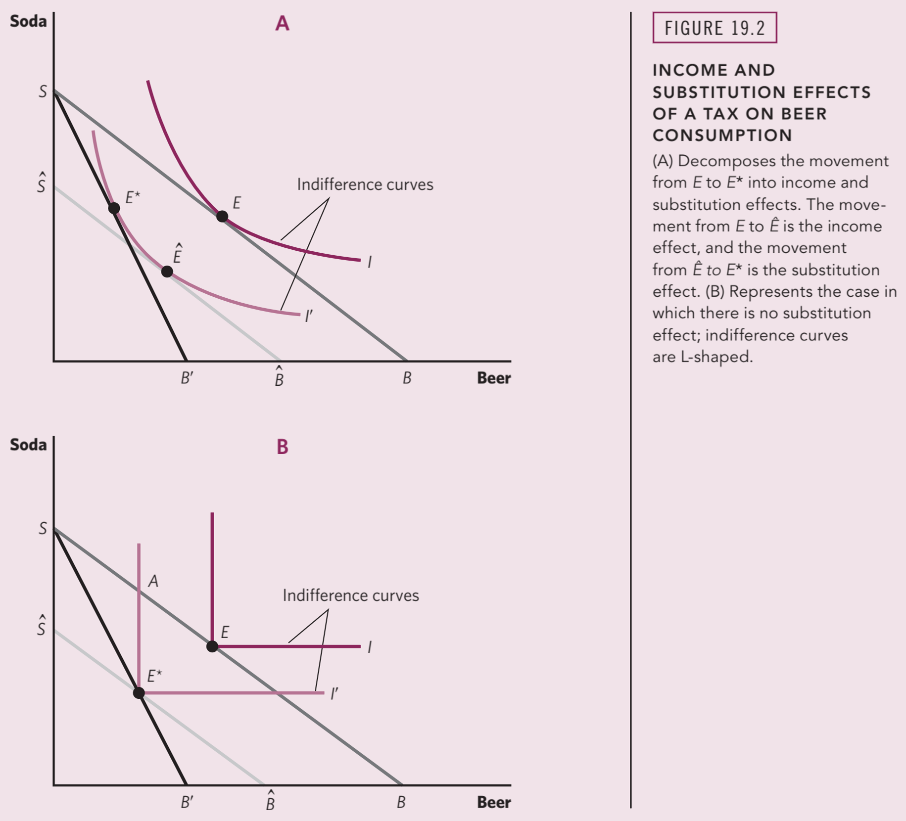
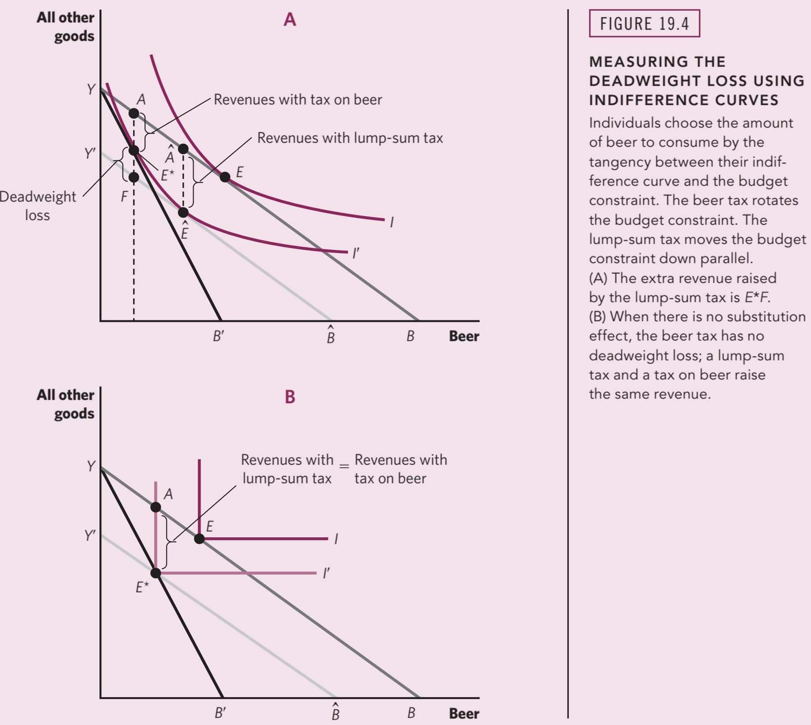
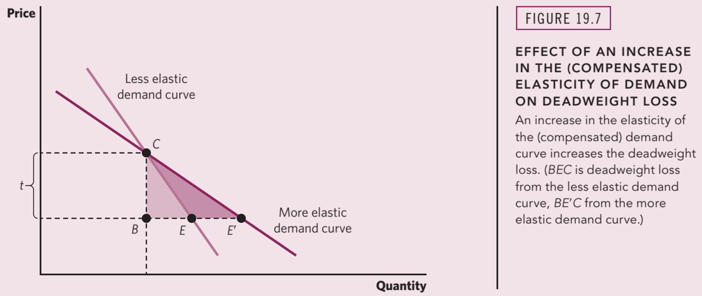
The Window Tax: A Case Study in Excess Burden
The adage ‘free as air’ has become obsolete by Act of Parliament. Neither air nor light have been free since the imposition of the window-tax. We are obliged to pay for what nature lavishly supplies to all, at so much per window per year; and the poor who cannot afford the expense are stinted in two of the most urgent necessities of life.
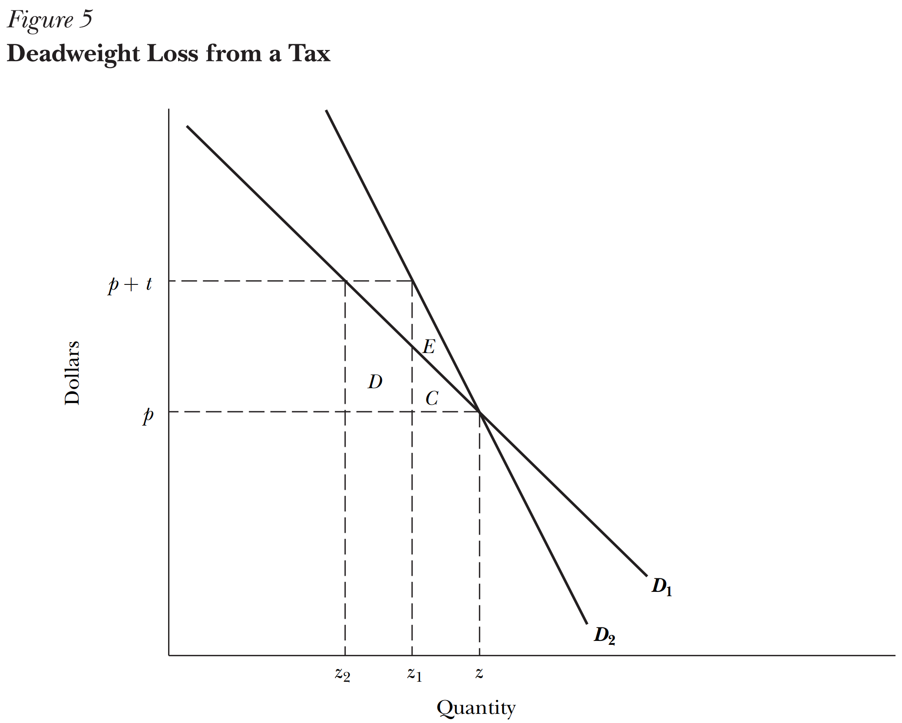
A homeowner in the period of 1747-1757 paid
In addition, each homeowner paid a fixed duty of 2 shillings.
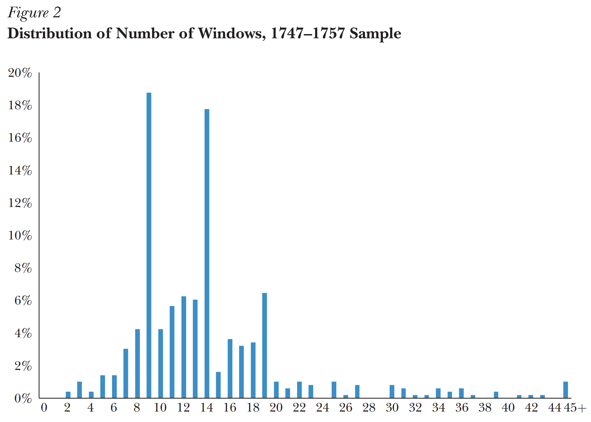
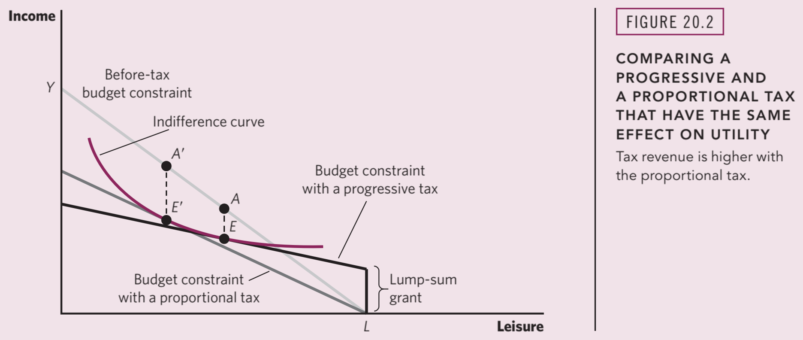
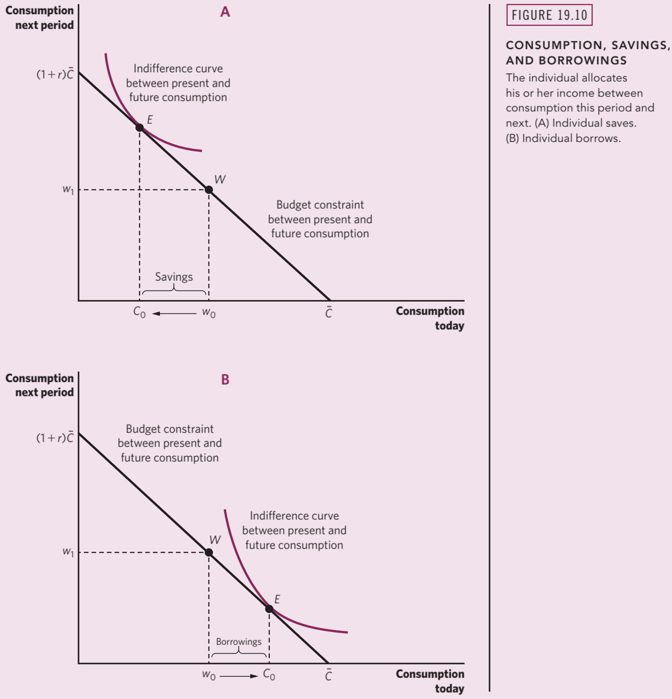
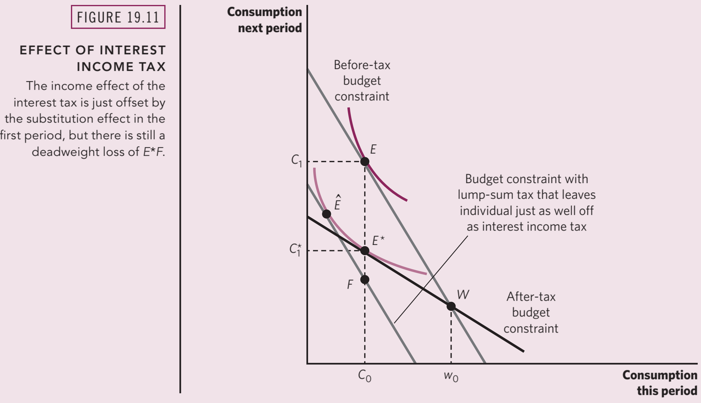
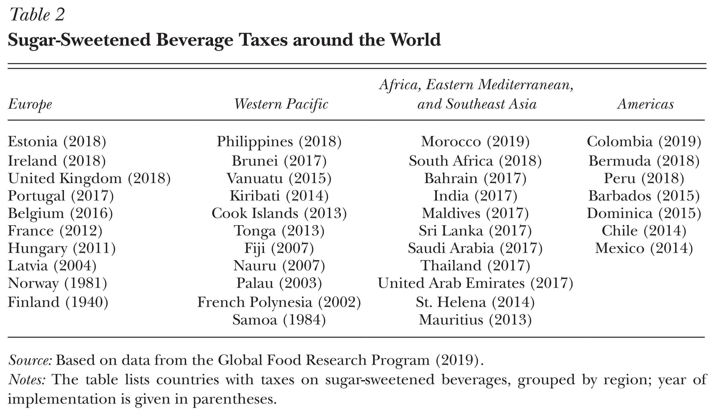
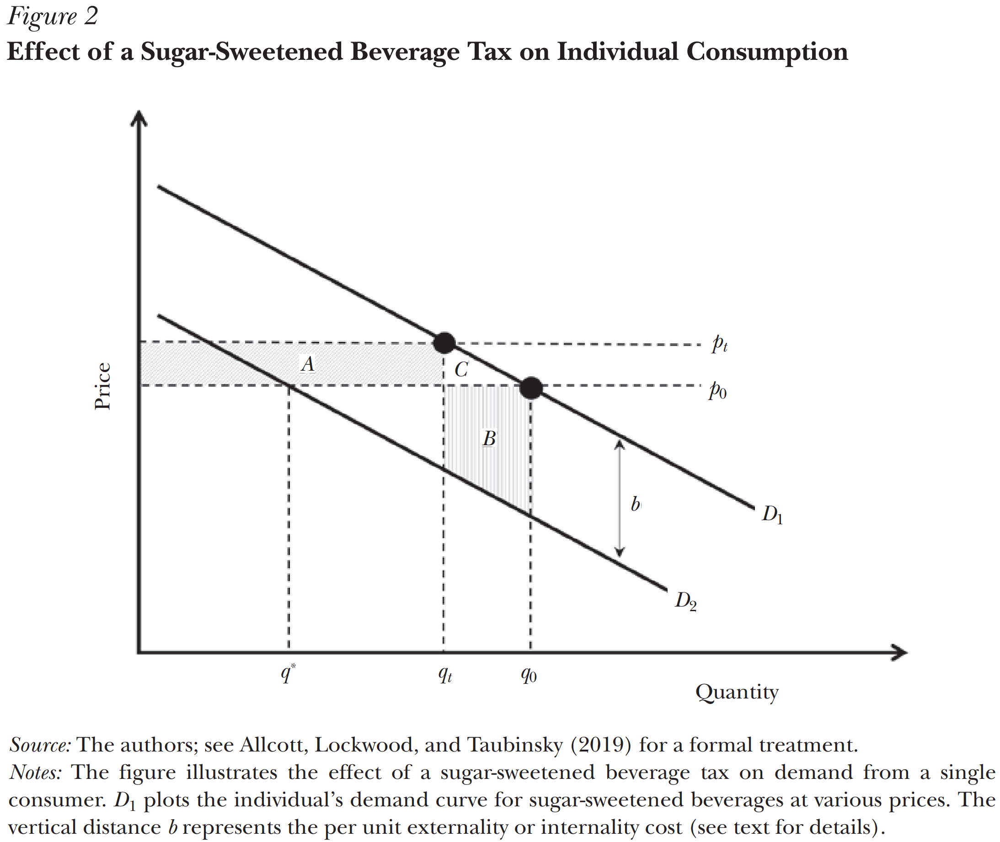